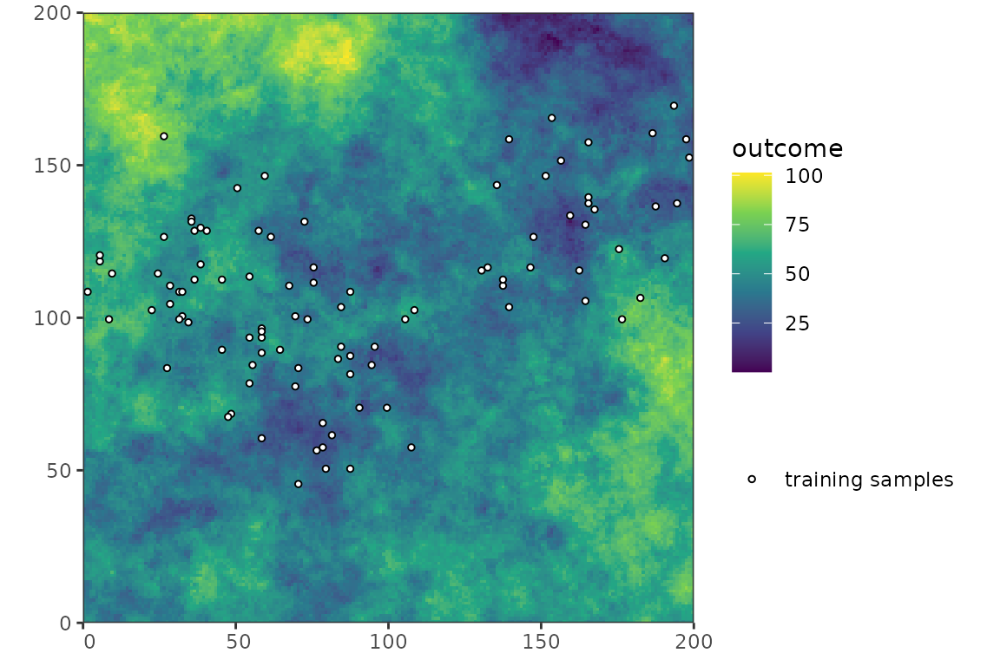
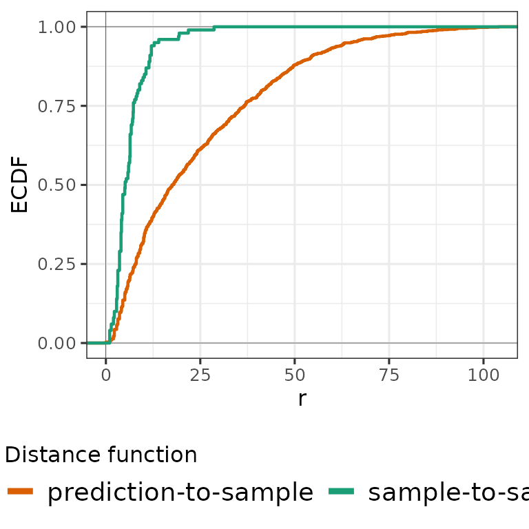
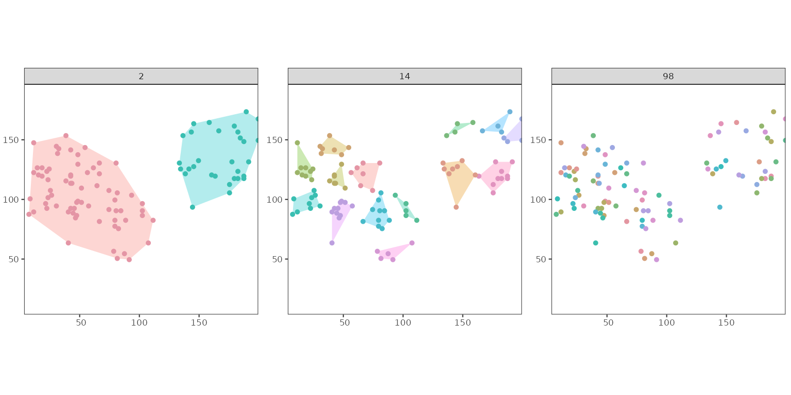
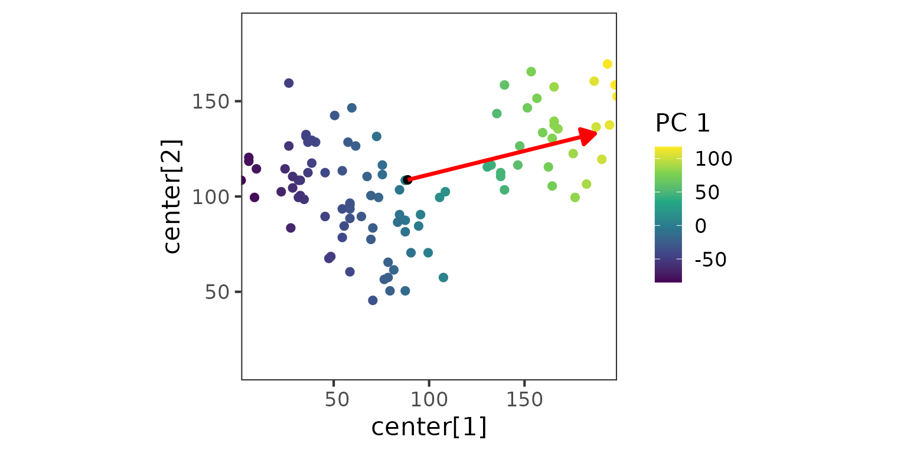
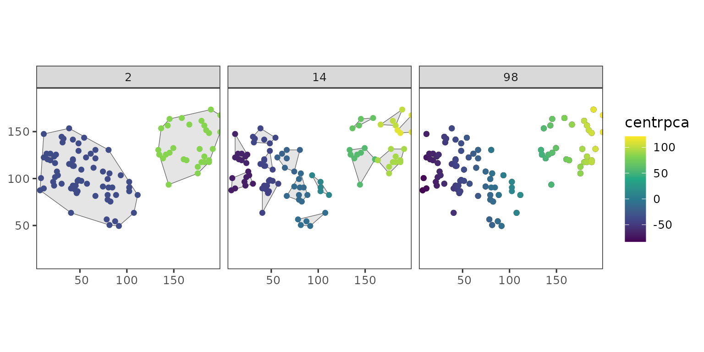
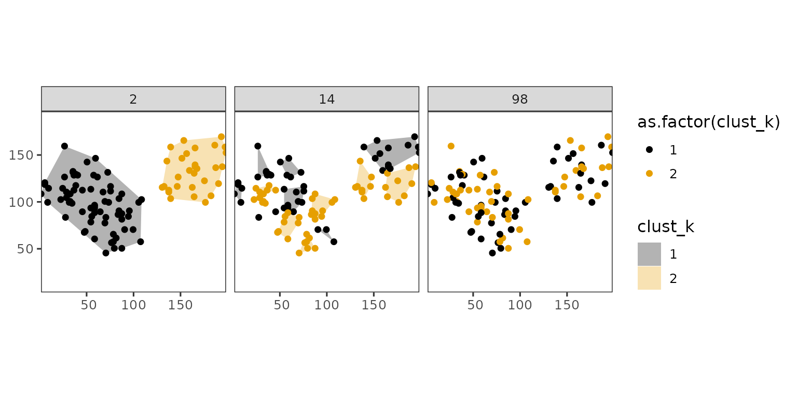
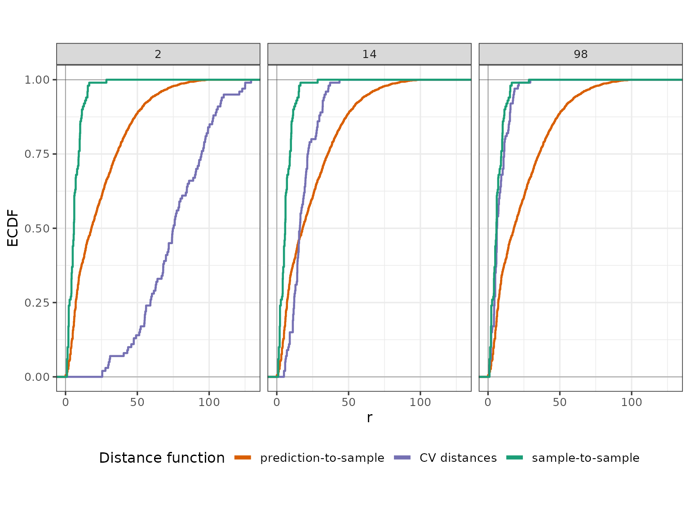
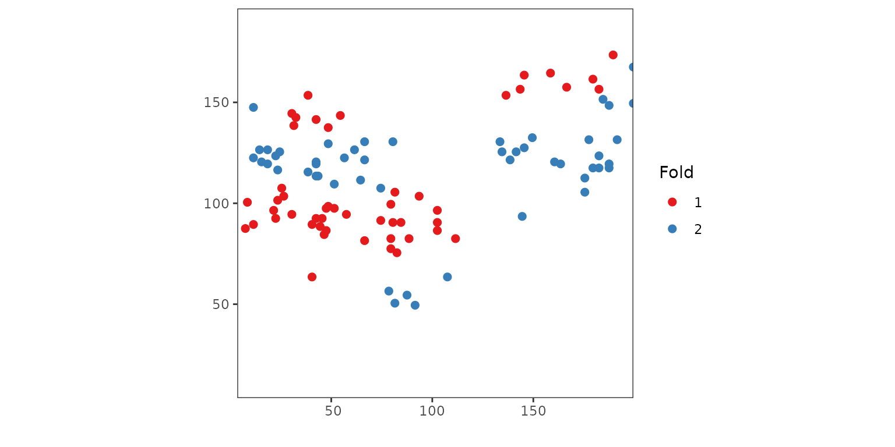
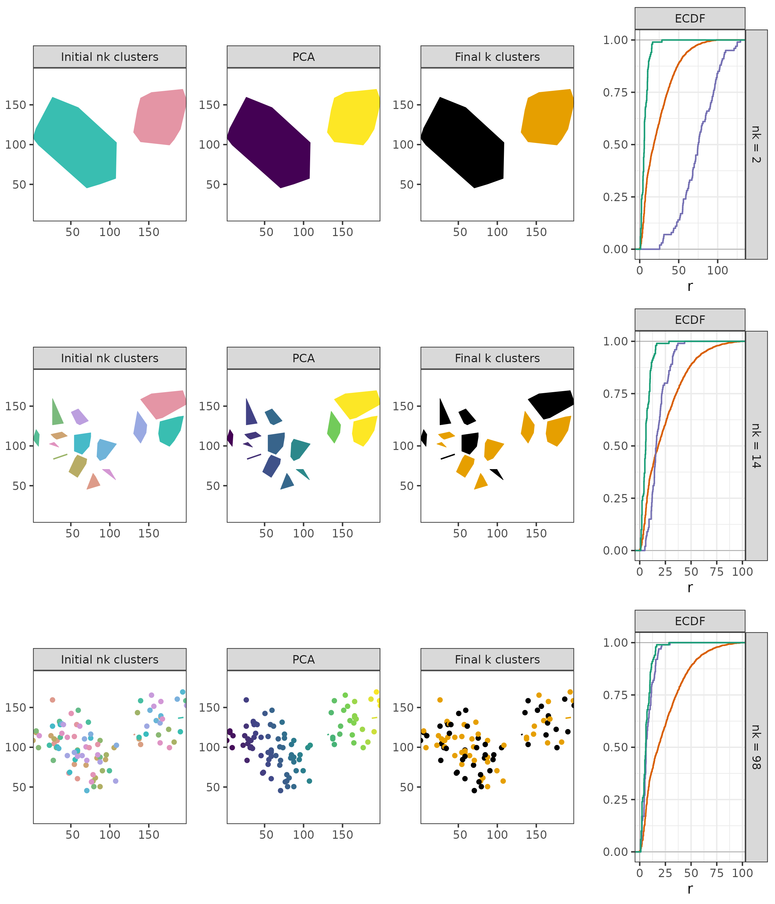

k-NNDM
k-NNDM.RmdIntroduction
k-fold nearest-neighbour distance matching (kNNDM) cross-validation was developed by Linnenbrink et al. (2024). It is the k-fold version of NNDM (Milà et al. (2022)), and as such much faster and better suited towards medium to large sized datasets. As NNDM, kNNDM also matches the distribution of nearest-neighbour distances (NND) between prediction locations and training samples during CV, but opposed to NNDM uses a clustering algorithm instead of excluding training samples.
The more detailed workflow is:
- Compute the distribution of NNDs between training samples, Gj, as well as between prediction locations and training samples, Gij.
- Use the KS-test to evaluate whether Gj ≥ Gij, i.e. whether the samples are randomly distributed in the prediction area.
-
Depending on the KS-test result:
- If Gj ≥ Gij, return a random CV split and stop the algorithm here.
- Otherwise, continue by clustering the training points into q ∈ Q, where Q = [k, …, N].
- The q clusters are then merged along the first principal component of the training-point coordinates until k folds are reached.
- For each of the q fold configurations, the NND distribution between the unique folds is calculated, Gj, and the distance between Gj and Gij is calculated using the Wasserstein statistic, W.
- The fold configuration yielding the lowest W is returned.
Setup
library(PDAV)
library(terra)
#> terra 1.9.27
library(sf)
#> Linking to GEOS 3.12.1, GDAL 3.8.4, PROJ 9.4.0; sf_use_s2() is TRUE
library(simsam)
library(ggplot2)
library(cowplot)
library(tidyterra)
#>
#> Attaching package: 'tidyterra'
#> The following object is masked from 'package:stats':
#>
#> filter
library(ggnewscale)
library(dplyr)
#>
#> Attaching package: 'dplyr'
#> The following objects are masked from 'package:terra':
#>
#> intersect, union
#> The following objects are masked from 'package:stats':
#>
#> filter, lag
#> The following objects are masked from 'package:base':
#>
#> intersect, setdiff, setequal, union
set.seed(100)
k = 2

kNNDM in geographical space
1. Compute Gj and Gij
Firstly, the kNNDM algorithm calcuates the distribution of NND between samples (Gj), as well as the distribution of NNDs between prediction points and samples (Gij). The calculation of NNDs is shown in the following figure: the nearest neighbour distance between samples is shown in the left panel, while the right panel shows nearest neighbour distances between prediction points and samples.

To characterize the distribution of these NNDs, their empirical cumulative density functions (ECDFs) are calculated:
Gj <- c(FNN::knn.dist(sample_coords, k = 1))
Gij <- c(FNN::knnx.dist(
query = pred_coords,
data = sample_coords,
k = 1
))
2. Test wether Gj <= Gij
Next, we test if Gj <= Gij, which would imply a random sampling design. In that case, the algorithm would stop and return a random fold assignment. However, as can bee seen below (and also from the figure above), this is not the case:
testks <- suppressWarnings(stats::ks.test(Gj, Gij, alternative = "great"))
testks$p.value >= 0.05
#> [1] FALSE3. Cluster samples into q clusters
Next, we cluster the training points into q clusters, where q ∈ Q and Q = [k, …, N]. This means that q is an integer sequence ranging from the number of folds, k, to the number of training points, N. The length of this sequence is 100 by default, but for visualization purposes it is reduced to 3 here.
nk_length <- 3
clustgrid <- data.frame(
nk = as.integer(round(exp(seq(
log(k),
log(nrow(samples) - 2),
length.out = nk_length
))))
)
clustgrid$W <- NA
clustgrid <- clustgrid[!duplicated(clustgrid$nk), ]
clustgroups <- list()
nk_df <- list()
tabclust <- list()
clust_nk <- list()
for (nk in clustgrid$nk) {
# Create nk clusters
clust_nk[[nk]] <- stats::kmeans(sample_coords, nk)$cluster
# tabclust: table containing the unique clust_nks and their frequency
tabclust[[nk]] <- as.data.frame(table(clust_nk[[nk]]))
names(tabclust[[nk]]) <- c("clust_nk", "Freq")
tabclust[[nk]]$clust_k <- NA
}
clustgrid
#> nk W
#> 1 2 NA
#> 2 14 NA
#> 3 98 NAThe sampled sequence of q clusters is in this case 2, 14, 98. The following figure shows the training points coloured by their cluster for each of the q clusters:
#> `summarise()` has regrouped the output.
#> `summarise()` has regrouped the output.
#> `summarise()` has regrouped the output.
#> ℹ Summaries were computed grouped by clust_nk and nk.
#> ℹ Output is grouped by clust_nk.
#> ℹ Use `summarise(.groups = "drop_last")` to silence this message.
#> ℹ Use `summarise(.by = c(clust_nk, nk))` for per-operation grouping
#> (`?dplyr::dplyr_by`) instead.
4. Merge the q clusters along their first PC into k folds
The q clusters are then merged along the first principal component of the samples coordinates if q > k. This prevents contigous clusters to end up in the same fold.
Therefore, we first calculate the PCA over the samples coordinates to capture the axis of largest spatial variation (first PC, red arrow):
pcacoords <- stats::prcomp(sample_coords, center = TRUE, scale. = FALSE, rank = 1)
Then, we order the q clusters according to the first principal component:
for (nk in clustgrid$nk) {
# compute cluster centroids and project that centroid to the first PC
centr_tpoints <- sapply(tabclust[[nk]]$clust_nk, function(x) {
centrpca <- matrix(apply(sample_coords[clust_nk[[nk]] %in% x, , drop = FALSE], 2, mean), nrow = 1)
colnames(centrpca) <- colnames(sample_coords)
return(predict(pcacoords, centrpca))
})
# Order the clusters along this first PC to ensure spatial separation when merging them later
tabclust[[nk]]$centrpca <- centr_tpoints
tabclust[[nk]] <- tabclust[[nk]][order(tabclust[[nk]]$centrpca), ]
}
And lastly, we merge the q clusters along the first principal component:
clust_k <- list()
tabclust2 <- list()
for (nk in clustgrid$nk) {
# We don't merge big clusters
clust_i <- 1
for (i in 1:nrow(tabclust[[nk]])) {
if (tabclust[[nk]]$Freq[i] >= nrow(samples) / k) {
tabclust[[nk]]$clust_k[i] <- clust_i
clust_i <- clust_i + 1
}
}
rm("clust_i")
## And we merge the remaining nk clusters into k groups
clust_i <- setdiff(1:k, unique(tabclust[[nk]]$clust_k))
# tabclust is ordered along PC1 and thus repeating a sequence
# from 1:k to assign folds results in spatially separated merging of clusters
tabclust[[nk]]$clust_k[is.na(tabclust[[nk]]$clust_k)] <- rep(clust_i, ceiling(nk / length(clust_i)))[
1:sum(is.na(tabclust[[nk]]$clust_k))
]
# Then creating a new data frame containing the raw nk cluster assignment for each point
tabclust2[[nk]] <- data.frame(ID = 1:length(clust_nk[[nk]]), clust_nk = clust_nk[[nk]])
# And add the assignment to k folds to them (clust_k)
tabclust2[[nk]] <- merge(tabclust2[[nk]], tabclust[[nk]], by = "clust_nk")
tabclust2[[nk]] <- tabclust2[[nk]][order(tabclust2[[nk]]$ID), ]
clust_k[[nk]] <- tabclust2[[nk]]$clust_k
tabclust2[[nk]]$nk <- nk # For plotting only
}#> Warning: `scale_fill_colorblind()` was deprecated in ggthemes 5.2.0.
#> This warning is displayed once per session.
#> Call `lifecycle::last_lifecycle_warnings()` to see where this warning was
#> generated.
5. Calculate Gj* for each q configuration and calculate W
distclust_euclidean <- function(tr_coords, folds) {
alldist <- rep(NA, length(folds))
for (f in unique(folds)) {
alldist[f == folds] <- c(FNN::knnx.dist(
query = tr_coords[f == folds, , drop = FALSE],
data = tr_coords[f != folds, , drop = FALSE],
k = 1
))
}
alldist
}
Gjstar_i <- list()
for (nk in clustgrid$nk) {
# Compute W statistic if not exceeding maxp
if (!any(table(clust_k[[nk]]) / length(clust_k[[nk]]) > 0.8)) {
Gjstar_i[[nk]] <- distclust_euclidean(sample_coords, clust_k[[nk]])
clustgrid$W[clustgrid$nk == nk] <- twosamples::wass_stat(Gjstar_i[[nk]], Gij)
clustgroups[[paste0("nk", nk)]] <- clust_k[[nk]]
}
}
#> nk W
#> 1 2 59.830638
#> 2 14 9.255344
#> 3 98 15.8240616. Return the configuration yielding the lowest W
k_final <- clustgrid$nk[which.min(clustgrid$W)]
W_final <- min(clustgrid$W, na.rm = T)
clust <- clustgroups[[paste0("nk", k_final)]]
Gjstar <- distclust_euclidean(sample_coords, clust)
print(k_final)
#> [1] 14The following plot shows the training samples with their final fold assignment:

Summary
